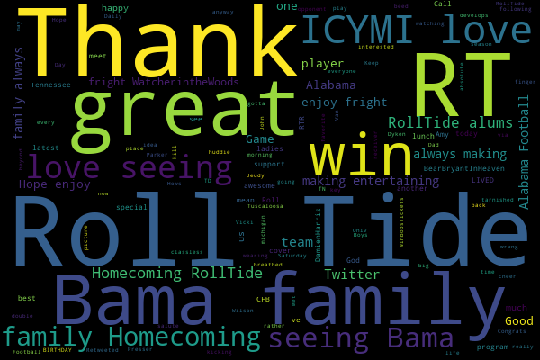
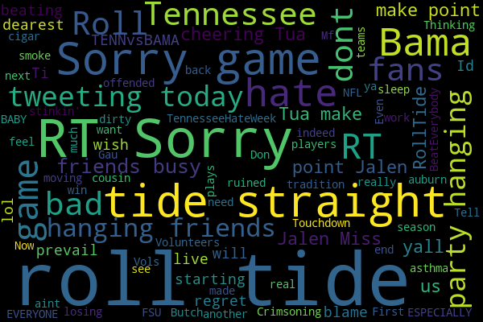

Twitter Sentiment for Sports Teams
Roll Tide
Symbolizing alabama sports, Tweets referencing Roll Tide tend to be positive and mostly clustered around alabama and the Deep South. The sentiment tends not to vary across the US with most locations reporting similar sentiment scores on Twitter.
Frequency of Rolltide tweets across US
Positive tweets involving roll tide
We can examine tweets involving roll tide to see what people like about roll tide. The following tweets were among the most positive tweets that were encountered.
- thank you @DHx34, you are a great player and I was so happy to meet you! #DamienHarris #RollTide #RTR #Alabama…
- Thank you Alabama Football for a great win, thank you to my Twitter Bama family for always making it entertaining! ROLL TIDE!!
- You have breathed life back into BAMA's place kicking game. Thank you & Roll Tide
- The latest Bama Boys CFB Daily Presser! https://t.co/W0s2MWvPqq Thanks to @BrandonNickel36 #rolltide #cfb
We can visualize the average sentiment of these tweets by using a word cloud. The following word clouds are made from the most positive and most negative tweets.
Positive words attached to roll tide
Negative words attached to roll tide
As we can see from these wordclouds. Tweets involving homecoming tend to be positive, while tweets involving Tennessee are negative. If we were advertising based on roll tide, we would wan't to avoid Tennessee or FSU, and instead focus the campaign on the homecoming.
The New England Patriots
The New england patriots are one of the best football teams in the country. The following data was taken on October 1st when the New England Patriots lost to the Carolina Panthers 30-33.
Sentiment Across Nation
Although we might naively expect the sentiment surrounding the Patriots to be highest in Massachusetts, we actually see that it is lower. To figure out whats going on here, we can look at some tweets from the game.
- RT @NFL_Memes: If the original Patriots defense was this bad, we'd all be British. 0.14993841164396318
- @Patriots down 14 and then start getting aggressive and going no huddle? How about showing that urgency BEFORE IT GETS TO THAT POINT!!!! 0.5402741795739572
- I'm sure the #Patriots will be able to fix everything wrong with their D, specials and O line in the 4 days before they play at Tampa. 0.40218030424849777
- RT @Panthers: Dab on 'em @Patriots 😃 https://t.co/E3LLMpHuG2 0.7638104706263552
- RT @JeopardySports: “Who are: the New England Patriots?” #JeopardySports #CARvsNE https://t.co/JVaNYrdQ7D 0.7999007944711222
- When the patriots lost and are sitting at 2-2 but the last time we started off that way we won the Super Bowl https://t.co/YoCkLVH5v6 0.66979677022259
- Well, the Patriots game sucked. 0.39671019079976555
We can also examine who was tweeting about the New England Patriots. As we can see below. Most of the tweets are found around Massachusetts, with the next largest number coming from North Carolina. The unreasonably strong sentiment from wyoming? As we can see from this graph, is that that sentiment was most likely due to the small number of people tweeting from Carolina. In this we also see a pitfall of just reading the sentiment maps by themselves. The people tweeting in places with small numbers of fans tend to be more enthusiastic than someone from Boston.